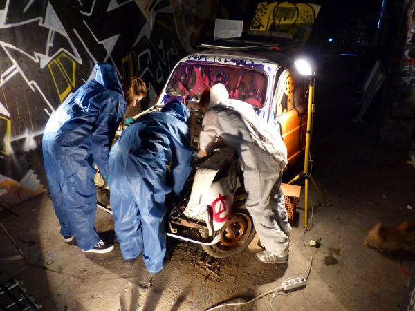

Fierce Festival returns next week with its programme of live art, performance and projects across Birmingham and Warwick Arts Centre. Running from 2-12 October, there is so much to choose from. I trust Fierce to take me by the hand and introduce me to all sorts of new, (often weird) and wonderful things. This year is absolutely no exception.
The full programme can be seen here, but I have focused on some of the events that piqued my interest:

{kind=link}
Car Deconstructions – Dina Roncevic
Casting traditional gender roles aside, seven Birmingham-based girls aged between 10 and 12 years olds will (after a basic introduction to car mechanics) disassemble a car to its nuts and bolts over three days. Artist Dina Roncevic will also talk about the project prior to the festival at Eastside Projects on Tuesday 30 September.
{kind=link}
Based at the festival’s hub at the Edge, come to Phoebe Davies’ nail bar. Get nail wraps with the faces of inspirational women from the area and exchange opinions and ideas about what feminism means to young women today.
{kind=link}
Eat the Street – Mammalian Diving Reflex
A group of local 12-year-olds will become restaurant critics, inviting you to dine with them whilst they offer up brutally honest opinions on food, service and décor. The project, led by Canadian artist group Mammalian Diving Reflex, aims to dismantle the barriers between age-groups, allowing children a chance to take charge and be heard. Participating restaurants include Piccolinos, Bodega, Simpsons, Manzils and The Karczma.
{kind=link}
Fierce Slow Dance – Sherwin Sullivan Tjia
Regularly run in Montreal and Toronto, these (Queer) Slow Dance nights are a high school dance with slow songs all night long with a ‘lending library of designated dancers for all you wallflowers, and a dancecard-booklet to set up dances in advance’. As with any Fierce party, fabulous attire is desired but not required. All they ask of you is to come with an open mind, open heart, and of course, open arms.
{kind=link}
Cyborg Day – The Cyborg Foundation
An evening with the world’s ‘first officially recognised cyborg’! Neil Harbisson was born with achromatopsia – he can only and only see in black and white. He has co-designed an electronic eye that allows him to experience basic colors as bone conducted vibrations. He will be joined by Moon Ribas who has an implant that enables her to register global earthquake tremors.
The programme will feature an AV set from Neil Harbisson and the dance work ‘Waiting For Earthquakes’ by Moon Ribas. These performances will be complimented by a series of short films and talks.
Festival passes and tickets can be bought via the festival website.